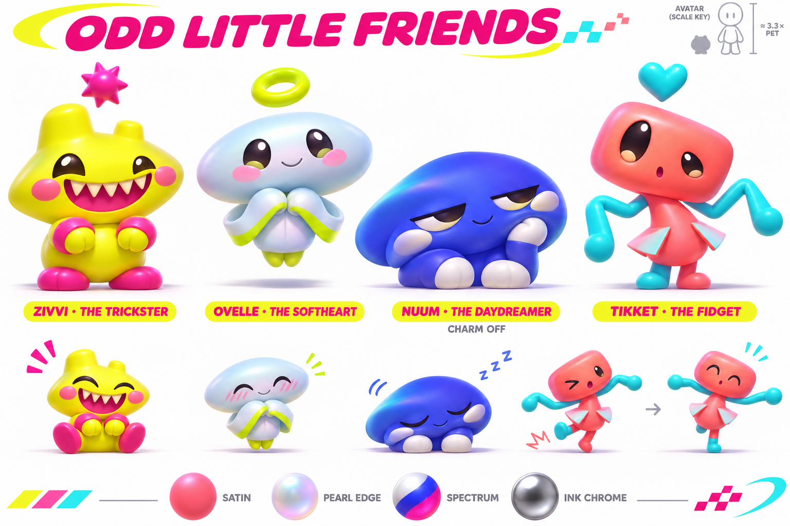
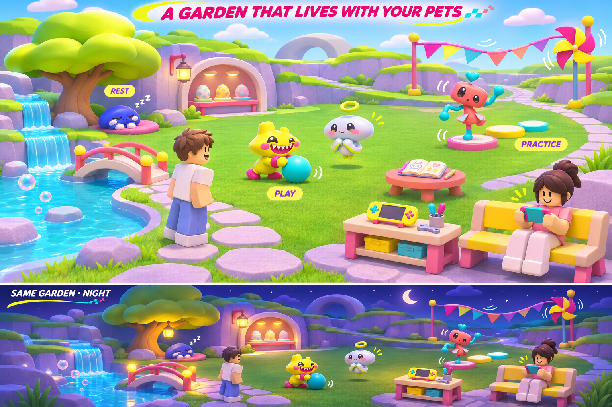

Odd Little Friends · a shared garden
Astra's revised proposal: Stars as one currency, a new fictional roster, and optional secondary-colored charms. Concept art only. Rigs, garden rebuilding, eggs, stats and migration await implementation review. Read the current plan.

Current roster exploration — four distinct profiles and expressive actions. Charms use the pet's secondary color. Base runtime satin should have softer highlights and smaller charms than this sheet.

Current world exploration — places to play, practice and rest. The night strip preserves day/night. Pet-to-avatar scale and motion need actual Studio validation.
Material reference and archived pet explorations
 V2 materials and palette remain useful; its plant/animal roster is retired.
V2 materials and palette remain useful; its plant/animal roster is retired.
 Customization exploration — shapes and colors are independent. The base heart has an earned route; “shop” does not mean a required Robux purchase. Paid examples would be known, previewable cosmetics.
Customization exploration — shapes and colors are independent. The base heart has an earned route; “shop” does not mean a required Robux purchase. Paid examples would be known, previewable cosmetics.
 First silhouette exploration — before the transferred references arrived. Softer palette and stronger gloss are exploratory, not the final material specification.
First silhouette exploration — before the transferred references arrived. Softer palette and stronger gloss are exploratory, not the final material specification.
Generated with the built-in image tool, reviewed by Astra. Prompt set and production notes.